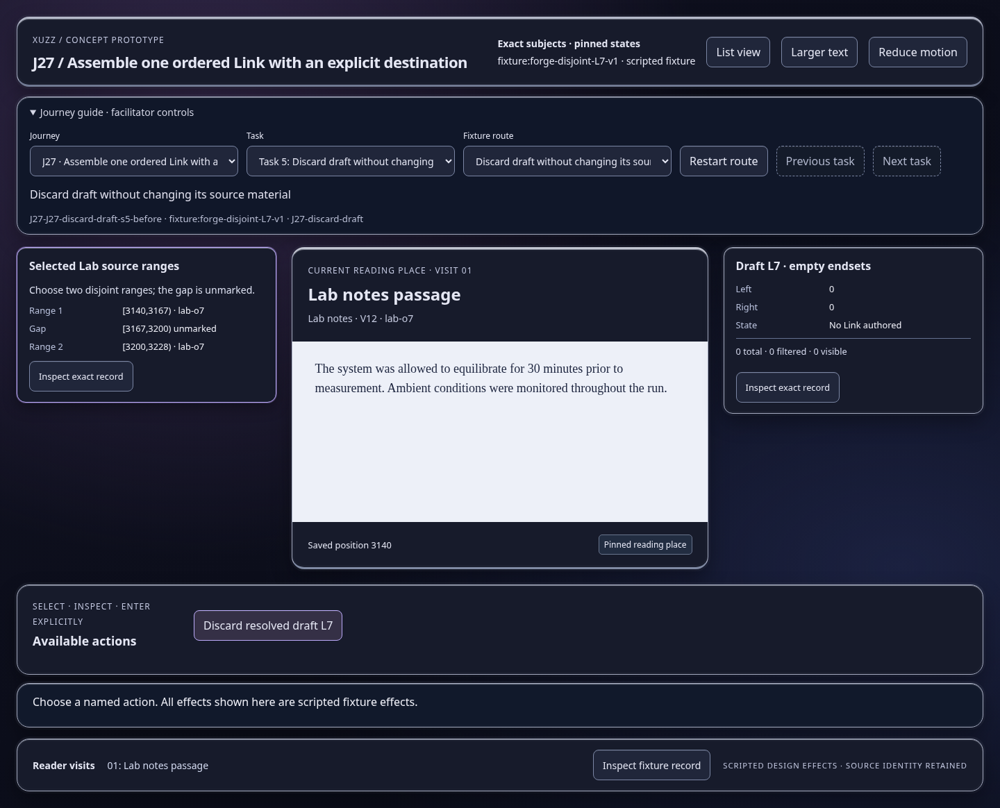
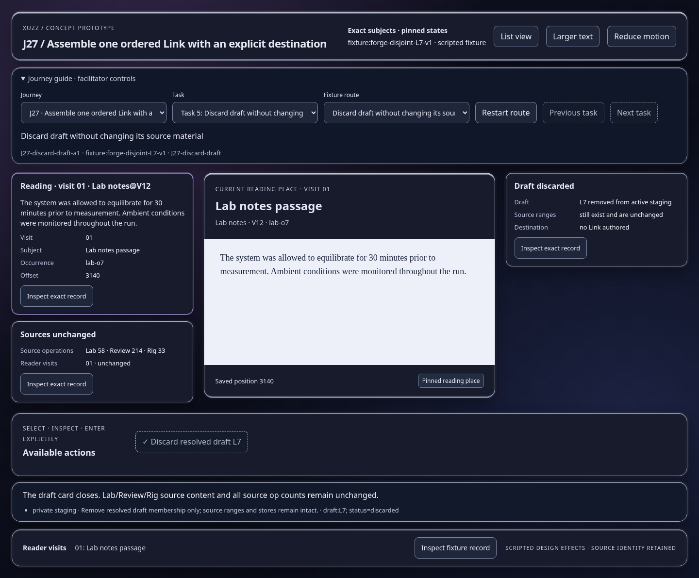

Scripted concept states; inspect the effect and identity trace. Images show actual prototype rendering.

The draft card closes. Lab/Review/Rig source content and all source op counts remain unchanged.
Open this represented state